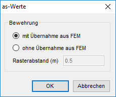
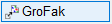
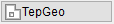
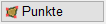
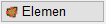

")

Automatische Bewehrung mit BAMTEC®Teppichen. Öffnet den Dialog as-Werte.
as-Werte (Dialog)
Abfrage, ob die as-Werte aus der FEM-Berechnung übernommen werden sollen.

mit Übernahme aus FEM
as-Werte werden aus dem angeklickten FEM-Datensatz übernommen. [Welche FE-Werte? (anklicken)]. Falls kein FEM-Datensatz vorhanden ist, werden Sie dazu aufgefordert, eine Ergebnisdatei einzulesen.
ohne Übernahme aus FEM
Es wird nur die Grundbewehrung erzeugt. Zusätzlich können mit Bereichen geänderter Bewehrungsgehalte Gebiete mit erhöhten as-Werten definiert werden.
Rasterabstand (m)
Eingabe des Abstandes für das Punktraster.
OK
Übernimmt die Eingaben und schließt den Dialog.
Abbrechen
Bricht die Bearbeitung ab und schließt den Dialog.
Wenn Sie die Option ohne Übernahme aus FEM gewählt haben, können Sie sofort die Umrissgeometrie definieren.
(s. unten: Umrissgeometrie des Verlegebereiches definieren)
1.FEM Ergebnisdatei öffnen oder anklicken
Auswahl der FEM-Ergebnisdatei.
a)Wenn kein FEM-Datensatz auf der Zeichnung vorhanden ist:
Wählen Sie in der Dateiauswahl die zu dem Grundriss gehörende FEM-Ergebnisdatei (*.fem) aus und klicken Sie auf Öffnen.
Nach dem Einlesen der Ergebnisdatei können Sie den Datensatz platzieren (s. FEM-Ergebnisdatei platzieren).
b)Wenn bereits ein FEM-Datensatz auf der Zeichnung vorhanden ist:
Klicken Sie den Datensatz an. [Welche FE-Werte? (anklicken)]. ISBCAD wechselt zur Definition der Umrissgeometrie.
FEM-Ergebnisdatei platzieren
§Führen Sie einen der folgenden Schritte aus, um den Drehwinkel anzugeben. [Drehwinkel].
a)Geben Sie den Drehwinkel (Winkel zur Horizontalen) an oder bestätigen Sie den Vorschlagswert mit Rechtsklick. Mit negativem Wert wird im Uhrzeigersinn gedreht. Bereits abgelegte FEM-Datensätze werden vorübergehend ausgeblendet.
b)Mit den Ausrichtungsoptionen P... oder O... können Sie die FE-Werte parallel oder orthogonal zu einem Bezugselement ausrichten. Klicken Sie die entsprechende Ausrichtungsoption an und klicken Sie anschließend das Bezugselement an, dessen Neigung übernommen werden soll.
c)Klicken Sie einen der Vorschlagswerte ein: 0°, 90°, 180°, 270°: Das Ergebnis ist sofort sichtbar.
§Geben Sie den Größenfaktor ein und bestätigen Sie mit der Eingabetaste. 1 = Originalgröße. [Faktor].
Standardmäßig wird der Faktor "2" vorgeschlagen. Den Größenfaktor können Sie auch nachträglich mit der Funktion [GroFak] im Funktionsbereich ändern.
§Legen Sie den FEM-Datensatz mit einem Linksklick auf der Zeichenfläche ab. [Lage].
Nach dem Platzieren der Ergebnisdatei wechselt ISBCAD zur Definition der Umrissgeometrie.

 Darstellung der FEM-Ergebnisdaten an den Maßstab der aktuellen Zeichnung anpassen. Öffnet den Dialog Faktor für as-Linien. §Wählen Sie den geeigneten Faktor ein und bestätigen Sie mit OK. Beispiel: Wenn im FEM-Programm die Datenpunkte im Maßstab 1:100 gespeichert wurden und Sie den Bewehrungsplan im Maßstab 1:50 zeichnen, müssen Sie den Datenbereich mit dem Faktor 2 anpassen. Die Darstellung der FEM-Ergebnisdaten wird um den gewählten Faktor vergrößert. §Um mit der automatischen Bewehrung fortzufahren, klicken Sie im Funktionsbereich auf  |
2.Teppichgeometrie des Verlegebereiches definieren [TepGeo]
Es ist empfehlenswert, die geplanten Teppiche im Linienprogramm vorzuzeichnen.
§Wählen Sie im Funktionsbereich die Art der Definition aus. Sie können die Umrissgeometrie über das Anklicken von Eckpunkten [Punkte] oder Elementen [Elemen] definieren.
2.1 Äußere Umrissgeometrie definieren
 §Geben Sie einen Abstand in der eingestellten Einheit ein oder übernehmen Sie den in der Eingabe stehenden Wert mit Rechtsklick. [Abstand o. Polygon wählen]. §Klicken Sie die Eckpunkte des Verlegebereiches in Reihenfolge an. [n. Eckpunkt (Teppichgeometrie)]. Mit Rechtsklick gelangen Sie wieder zur Abstandsangabe und können einen neuen Abstand angeben. Die Eingabe wird am zuletzt angeklickten Punkt wieder aufgenommen. Der neue Abstand gilt demnach für die Parallele vom letzten zum folgenden Punkt. Das Polygon wird automatisch geschlossen, wenn der erste Punkt ein zweites Mal angeklickt wird. Sie können nun mit der Angabe der inneren Umrissgeometrie fortfahren.
 §Klicken Sie die Elemente für die Umrandung des Verlegebereiches in Reihenfolge an. [Element wählen (Teppichgeometrie)]. Achten Sie darauf, die Elemente auf der Seite anzuklicken, zu der der Abstand angetragen werden soll. Sie können sowohl Linien als auch Kreise anklicken. Das erste und letzte Element sollte eine Linie sein, um eindeutige Schnittpunkte zu erzeugen. §Schließen Sie das Polygon mit . Das Polygon wird nur geschlossen, wenn es auch tatsächlich geschlossen ist. Ist es lediglich optisch geschlossen, z. B. bei Durchbrüchen mit dem Abstand 0, wird das Polygon nicht aufgenommen. Sie können nun mit der Angabe der inneren Umrissgeometrie fortfahren. |
2.2 Durchbrüche definieren
§Geben Sie einen Abstand in der eingestellten Einheit ein oder übernehmen Sie den in der Eingabe stehenden Wert mit Rechtsklick. [Abstand o. Polygon wählen]. §Klicken Sie die Eckpunkte/Elemente des Verlegebereiches wie bei der Angabe der äußeren Umrissgeometrie an. §Wenn Sie den Verlegebereich definiert haben, klicken Sie auf Öffnet den Dialog Teppichparameter. |

Um in einer vorhandenen Geometrie fortzufahren
§Klicken Sie einen Polygonhilfspunkt an. Sie gelangen wieder zur Abstandsangabe. [Abstand o. Polygon wählen]. |
Um die definierte Geometrie zu bearbeiten
Wenn Sie die Bewehrung einer Lage beendet haben, oder im Dialog Teppichparameter auf Abbruch klicken, erscheint die Schaltfläche Letztes Polygon. §Klicken Sie auf Letztes Polygon, um die Bearbeitung der zuvor beschriebenen Umrissgeometrie mit den zugehörigen Durchbrüchen wieder aufzunehmen. §Wenn Sie den Verlegebereich definiert haben, klicken Sie auf Öffnet den Dialog Teppichparameter. |
3.Teppichparameter angeben (Dialog)
Nach Auswahl der Teppichgeometrie wird der Dialog Teppichparameter geöffnet.
§Wählen Sie im Dialog unter anderem die Bewehrungslage und Bewehrungsrichtung.
Siehe: Teppichparameter (Dialog)
§Bestätigen Sie mit OK.
4.Bewehrung bearbeiten
Wenn Sie die Teppichgeometrie festgelegt haben und im Dialog Teppichparameter auf OK geklickt haben, wird der Dialog BAMTEC geöffnet.
§Ändern Sie die gewünschten Eigenschaften auf der entsprechenden Registerkarte.
§Wenn Sie die Bearbeitung abgeschlossen haben, klicken Sie im Dialog auf die Schaltfläche Fertig.
Siehe: BAMTEC (Dialog)
Siehe auch: